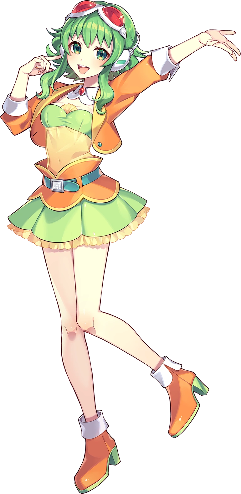

Vocaloid
Vocaloid är ett datorprogram för syntetisk sång utvecklat av Yamaha Corporation. Programmet syntetiserar en sångröst efter den text och melodi som användaren skriver in. Det finns olika slags sångröster, varje sångröst kan ha en egen karaktär och sångartist.
Hatsune Miku, även kallad Miku Hatsune, och officiellt kodnamnet CV01, är en röstbank för Vocaloid-programvara utvecklad av Crypton Future Media och dess officiella antropomorfa maskotkaraktär, en 16-årig tjej med långa, turkosa twintails.
Megurine Luka, kodnamnet "CV03", är en Vocaloid-mjukvara utvecklad av Crypton Future Media, med huvudkontor i Sapporo, Japan. Dess officiella moe-antropomorfism är en 20-årig kvinna. Hon använder Yamaha Corporations Vocaloid 2 och Vocaloid 4 sjungande synthesizerteknologi. Hennes röst är samplade från Yū Asakawa
Megpoid är en Vocaloid från Internet Co., Ltd. Hennes röst är samplade av Megumi Nakajima. Programvarans maskot heter Gumi. Hon kallas också ibland Megpoid GUMI, eller GUMI Megpoid. Namnet "Gumi" är röstleverantören Megumi Nakajimas smeknamn från hennes barndom